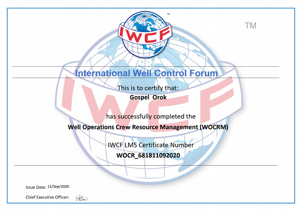
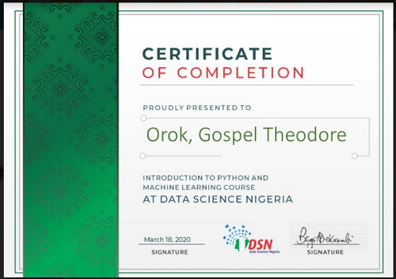
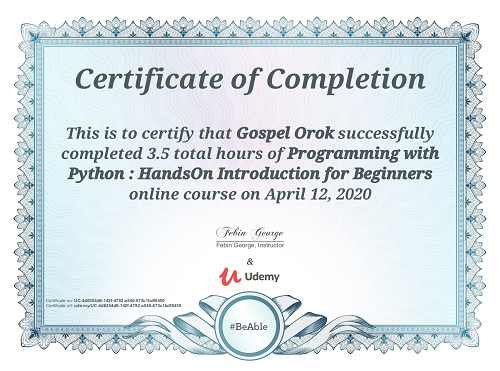
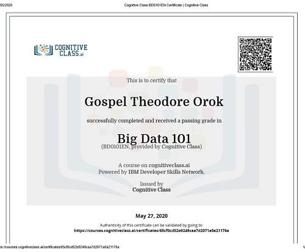
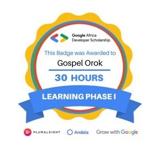
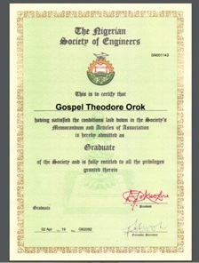
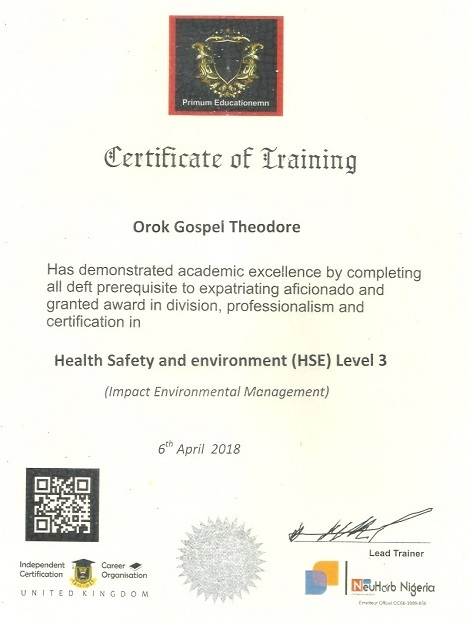
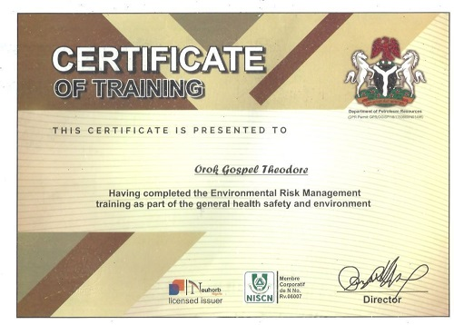

Certifications
- Operations Resource Management(WORCM) IWCF-Petrofac
Download
Certificate

- International Well Control Forum(IWCF Level-1 programme)Petrofac(August 2020)
- Data Science Nigeria (DSN) AI+ in Python and Machine Learning(March 2020)

- Programming with Python at Udemy(April 2020)

- Big Data101 by IBM Developer Skills Network (May 2020)

- Google Cloud Certified Associate Cloud Engineer. (in-view)

- Google Cloud Certified Associate Cloud Engineer. (in-view)

- Nigerian Society of Engineers NSE- Graduate Member(March 2019)

- General Health Safety, Risk Assessment and Environmental Management (HSE level 1,2,3), ISCO, UK by NeuHorb Nigeria.

- Risk Assessment and Environmental Management certificatiuon

- Computer Training Certificate, Isaac’s Computers in affiliation with Akwa Ibom state College of Education(2011)
- HNGi7 Certificate.